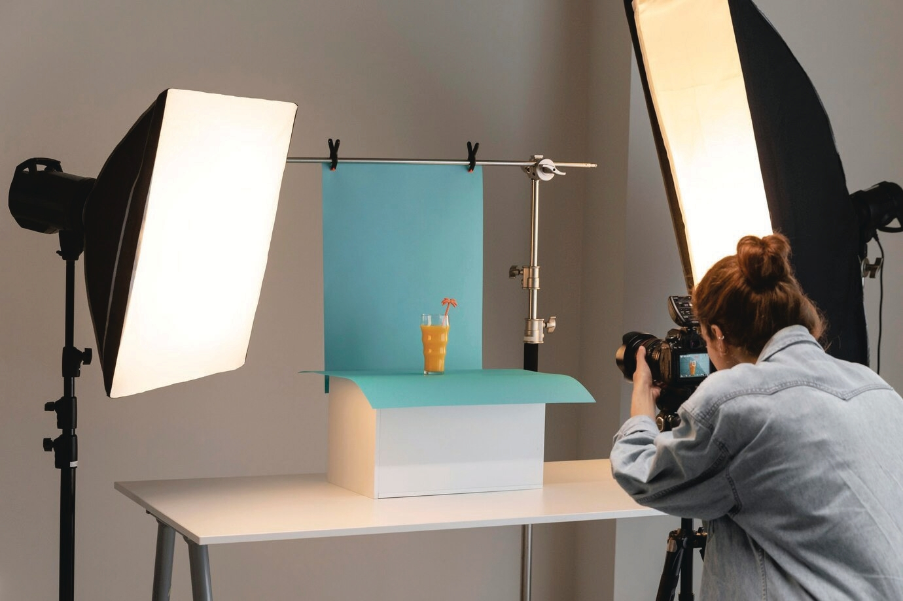
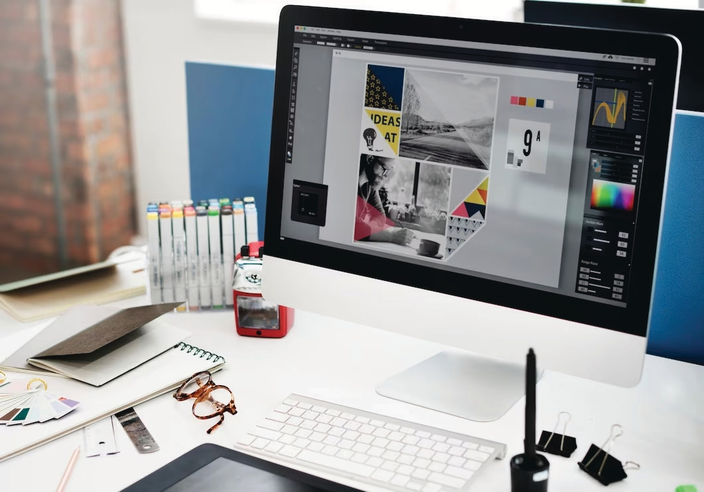
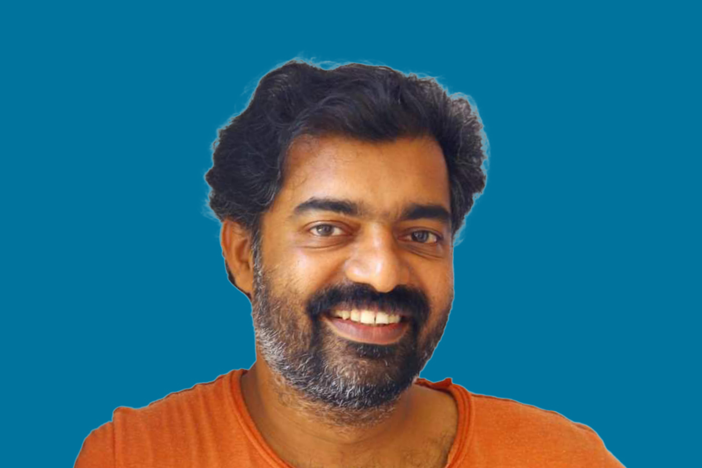
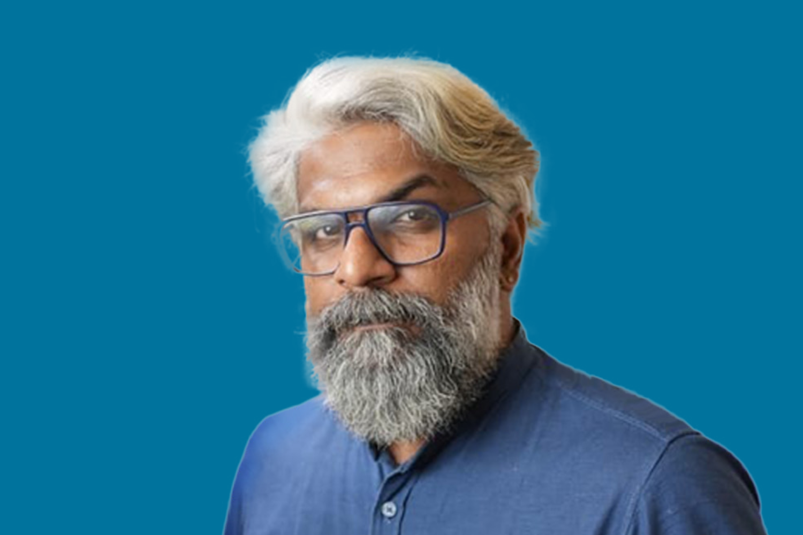

Create a unique connection between the present and the future. At De-Start, we forge an enduring impression for brands that strive for attention, spanning across TV, Print, Radio, and Digital platforms.
I hope this letter finds you well. De-Paul Institute Of Science and Technology, introducing our full-fledged branding agency, De-Start.
More than just a branding agency, De-Start embodies creativity, innovation, and strat egic thinking. With expert teams in print, TV,
Radio, Digital, and Activations, we offer comprehensive solutions to elevate your brand presence across diverse platforms.
Our 360-degree branding approach, based on research-backed strategies, crafts experiences that resonate with your audience,
fostering lasting connections. We invite you to join us on a transformative journey and experience the change that takes your
brand to new heights. Thank you for considering De-Start as your branding partner.
Warm regards,
Fr. John Mangalath Principal, DiST, Chalakkudy. Patron De-Start
Our Services
Capturing Brilliance

PHOTO SHOOT
Our proficient production team, equipped with ace photographers, state-of-the-art equipment, and skilled stylists, can provide exclusive stills and product shoots tailored to various budgets.
Iconic, Confident, Simple.

DESIGN HOUSE
Our full-fledged design studio, paired with a versatile creative team, ensures your brand stands out as nothing short of iconic, exuding confidence, clarity, and simplicity.
Empowering Online Presence
DIGITAL MARKETING
De-Start, an aspiring digital marketing service company under DiST, specializes in helping businesses achieve their online marketing goals.
Tailored Strategies, Tangible Results
SERVICES
Explore a range of services, including pay-per-click advertising (PPC), social media marketing, content marketing, and more.
Experience Excellence
WHY CHOOSE US
Benefit from our experienced team, customized strategies, quality content, and results-oriented approach.
Innovative Event Management
EVENTS
De-Start's event management team ensures innovation and perfection in events like the Mohanlal show, Mr. Kerala, and Miss Kerala fitness events.
Our Team
Sanil Kalathil
Director
Sanil Kalathil, our guiding force and creative director, is best described as an enthusiastic commercial filmmaker and video aficionado. Commencing his journey in Indian cinema in 1993, Sanil swiftly made a mark as a filmmaker. In 2003, he unveiled the Malayalam feature film "Uthara," earning global acclaim and screening at national and international film festivals.
Sanil Kalathil, our guiding force and creative director, is best described as an enthusiastic commercial filmmaker and video aficionado. Commencing his journey in Indian cinema in 1993, Sanil swiftly made a mark as a filmmaker. In 2003, he unveiled the Malayalam feature film "Uthara," earning global acclaim and screening at national and international film festivals.
With an impressive portfolio of over 200 commercials, Sanil has lent his directorial vision to renowned companies such as Daily Delight, Joy Alukkas, Vinverthj and Cutiepie. His second feature film, "Marconi Mathai," released in 2019, emerged as a commercial success with its unique narrative starring Jayaram and Vijay Sethupathi. Beyond his film ventures, Sanil now serves as the mentor and creative director at De-Start, inspiring and leading the creative team. His accolades include the UNICEF Project Award for the Malayala Manorama daily's documentary " Palathulli" and a Kerala Chalachithra Academy award nomination for " Best Women's Film" for " UT HARA. " His contributions extend to winning the Mathrubumi Art State Award in 2004 for the music program "AUTOGRAPH " and the Kerala State's Best Tele-Serial Award in 2011 for the fiction television series "JOHN DE PANIC." His legacy continues with the launch of the Mazhavil Manorama Channel, with film festivals worldwide appreciating and commemorating his masterpieces.

Vinod Krishna
Mentor
A versatile writer, filmmaker, and magazine editor, he was born in Bihar to Malayali parents. Drected Movie Elam, which won the Best International Feature Film Award at the Golden State Film Festival in Hollywood and the Bayamon International Film Festival in Puerto Rico,. Alumni Of the New York Film Academia I attended a crash course and film workshops at Universal Studios, LA. The recently published novel 9MM BERETTA, based on Gandhi Murder, is a best-selling DC book that won the Churukad Awsrd and TKC Vaduthala awards.
A versatile writer, filmmaker, and magazine editor, he was born in Bihar to Malayali parents. Drected Movie Elam, which won the Best International Feature Film Award at the Golden State Film Festival in Hollywood and the Bayamon International Film Festival in Puerto Rico,. Alumni Of the New York Film Academia I attended a crash course and film workshops at Universal Studios, LA. The recently published novel 9MM BERETTA, based on Gandhi Murder, is a best-selling DC book that won the Churukad Awsrd and TKC Vaduthala awards.
Poetry installation is his brain child, and it was done in Kochi in 2015, 2016, and 2017. Ranganath Ravee, the award-winning sound engineer, designed the audio for this unique artwork. This was appreciated both by the public and the literati. It was inaugurated by Mallika Sarabhai and holds a place in the Limca Book of World Records. Later, actor Joy Mathew became the mentor of this art form.
He started writing short stories during his college days. His stories clearly share the anxieties of living in an overly materialistic world and the complex realms of man-woman relationships. His anthology of stories, 'Kannusutram', was published in 2016 and has been well received in literary circles. Urumbu Desham was the second short story collection. At the age of 24, he directed the short movie 'Mayyankkalam', which screened at the Torrento activist film festival. The movie's focus is on the crucial issue of the day: "Water. The much-acclaimed short movie was screened at the World Water Forum, Water & Film Event, Mexico, and the World Social Forum, Mumbai, in 2003. It shot many ad films for various clients, including one of Parineeti Chopra and co-director GK. Now a meta-certified digital marketing strategist
Sajimon PK
Mentor
A highly accomplished professional with an illustrious 18-year career in the field of Public Relations and Advertising. He holds a Post Graduate degree in Public Relations and Advertising from the esteemed Kerala Media Academy, where he earned recognition as a Gold Medalist. Over the course of his career, Sajimon has demonstrated his creative and strategic expertise across various sectors.
A highly accomplished professional with an illustrious 18-year career in the field of Public Relations and Advertising. He holds a Post Graduate degree in Public Relations and Advertising from the esteemed Kerala Media Academy, where he earned recognition as a Gold Medalist. Over the course of his career, Sajimon has demonstrated his creative and strategic expertise across various sectors.
In his initial years, Sajimon played a pivotal role at Matri Advertising, where he served as Ideation Supervisor for seven years. His responsibilities covered a diverse array of industries, including FMCG, Telecom, and services. Notable brands in his portfolio at Matri include Reliance Mobile, V-Guard, AVT, Mathrubhumi, Club FM, Dhathri, and Veegaland. His versatility as both a writer and a strategist became evident during this period.
Sajimon later took on the role of Head-Copy at Hammer India, contributing his creative insights to brands such as Cycle Agarbathies, Sobha Developers, and Paragon. Currently, he holds the position of Group Creative Head at Allways Branding, overseeing an extensive portfolio that includes LG India, Renai Group, myG, Sylcon, Gulf Madhyamam, Daily Delight, and MAS Cardamom. Alongside his creative endeavors, Sajimon serves as the Director at Team UTC and mentors aspiring professionals through De-Start, showcasing his leadership and mentoring capabilities.

Sarat Mohan
Head-Marketing operations
With over 1 5 years of diverse experience spanning international marketing, sales, creative direction, event coordination, office administration, and hospitality management, Sarat Mohan has established himself as a dynamic professional with a keen eye for strategy and innovation. Holding a Postgraduate degree in MBA, his career journey reflects a seamless blend of expertise across multiple industries.
Sarat began his professional career in 2007 as an Administration Coordinator in Al Ain, UAE. In 2011, he returned to Kerala, embarking on a new chapter in the advertising industry. His ability to strategize and execute impactful campaigns led him to coordinate numerous national-level events, handling both government and private sector projects.
With a natural inclination towards creativity and marketing, Sarat expanded his expertise into visual media, producing TVC advertisements, corporate videos, and government project videos. Over the past 10 years in advertising and marketing, he has mastered the art of strategic brand positioning, ensuring the right placement of products and services in the market.
Seeking to broaden his expertise, Sarat ventured into hospitality, taking on the role of General Manager at 3-star and 4-star hotels. Leveraging his branding and marketing acumen, he introduced innovative ideas and strategic visions that significantly enhanced the hotels' market presence and profitability.
Currently, Sarat serves as the Chief Marketing Officer at De-Start, the incubation center of De Paul Institute of Science and Technology. With his vast experience across multiple industries, he is poised to drive growth, innovation, and strategic success for the organization and its associates. His multifaceted career journey makes him a valuable leader, continuously pushing boundaries and fostering excellence in every field he steps into.